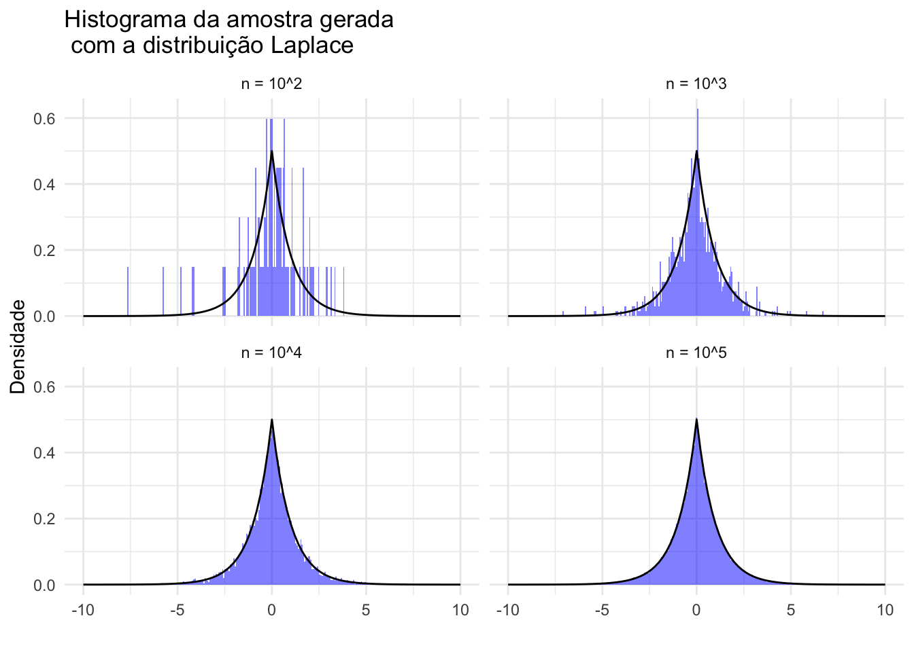
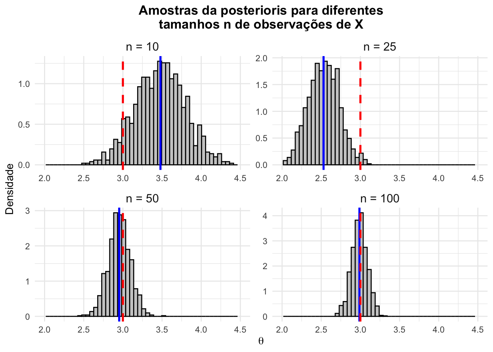
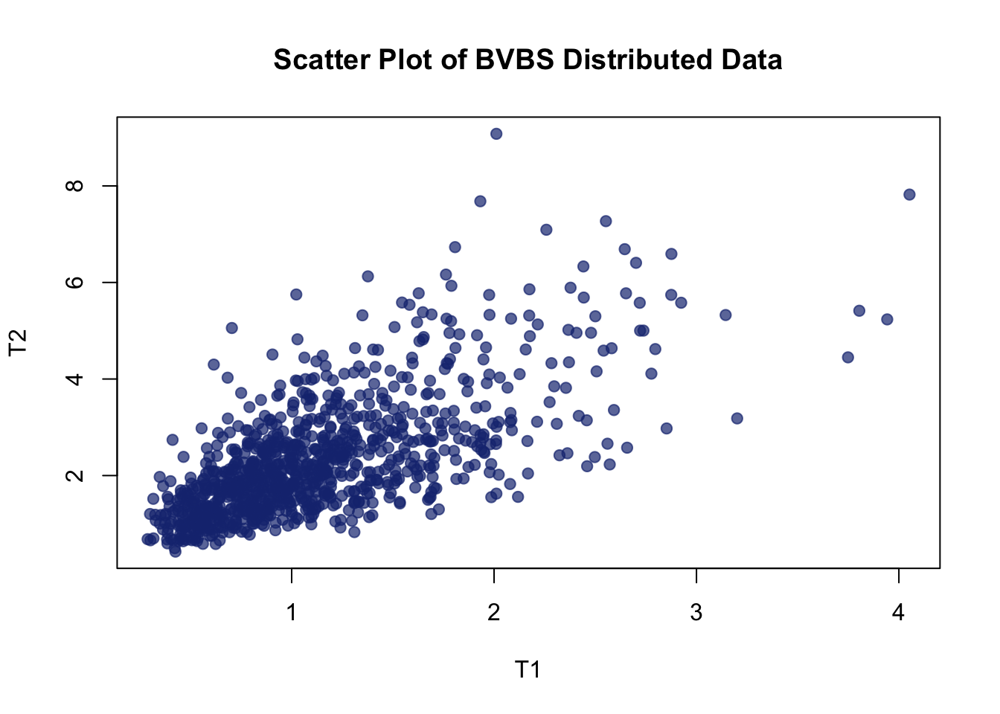

gerador_laplace <- function(n){
u <- runif(n) # gera amostras da uniforme
x <- ifelse(u < 0.5, # se u < 0.5,
log(2*u),
-log(2-2*u))
return(x)
}Lista 1
Geração de NPA’s (Números Pseudo-Aleatórios)
Exercício 1)
A distribuição Laplace padrão tem densidade \(f(x) = \frac{1}{2}e^{-\lvert x \lvert}~,x \in \mathbb{R}\) use o método da transformada inversa para gerar uma amostra aleatória de tamanho 1000 dessa distribuição (plote um histograma).
Solução
A distribuição Laplace é uma distribuição simétrica de caudas pesadas. A função de densidade de probabilidade é dada por:
\(f(x) = \frac{1}{2b}e^{-\frac{\lvert x-\mu\lvert}{n}}\). A Laplace padrão é um caso específico, com \(\mu = 0\) e \(b = 1\), que resulta na função de densidade de probabilidade \(f(x) = \frac{1}{2}e^{-\lvert x \lvert}\). Dessa forma, ao final desse exercício, esperamos que o histograma mostre um comportamento de uma função simétrica, centrada no zero com um pico abrupto em zero.
Primeiramente, precisamos calcular a função de distribuição acumulada da distribuição com a integral:
\[ F(x) = \int_{-\infty}^x f(t) \, dt \]
Para calcular a FDA, precisaremos dividir a integral em duas partes. Se o x for positivo, a F(x) cobrirá toda a região negativa + parte da região positiva do domínio. Ou seja, o expoente da parte negativa será invertido para valor positivo (que retornará ao negativo com o sinal de - que está fora do módulo), e o da parte positiva terá o sinal mantido, que também resultarán em \(-x\) com o sinal exterior ao módulo. Ou seja, para garantir que o sinal seja sempre negativo ao final, devemos inverter o sinal de x quando ele se encontra na parte negativa.
Já se o x for negativo, precisaremos apenas integrar a parte negativa da densidade (ou seja, invertendo o sinal de x).
\[\begin{align} F_{x\geq 0}(x) &= \int_{-\infty}^0 \frac{1}{2} e^{x}dx + \int_{0}^x \frac{1}{2}e^{-x}dx\\ &= \frac{1}{2}(e^0 - e^{-\infty}) + \frac{1}{2}(-e^{-x}-(-e^0))\\ &= \frac{1}{2}(1 - 0) + \frac{1}{2}(1 -e^{-x})\\ &=\frac{1}{2}+\frac{1}{2}(1 - e^{-x}) \\ &=\frac{1}{2}+\frac{1}{2}- e^{-x} \\ & = 1-\frac{e^{-x}}{2}\\ \end{align}\] \[\begin{align} F_{x \leq 0}(x) &= \int_{-\infty}^x \frac{1}{2} e^{-x}dx\\ &= \frac{1}{2} (e^{x}-e^{-\infty})\\ &= \frac{1}{2} (e^{x}-0)\\ &= \frac{e^x}{2} \end{align}\]Portanto: \[ F(x) = \begin{cases} \frac{1}{2} e^{x} &, ~ \text{se } x < 0 \\ 1 - \frac{1}{2} e^{-x} &,~ \text{se } x \geq 0 \end{cases} \]
Agora, devemos calcular a inversa da função de distribuição acumulada para usar o teorema da transformada inversa.
\[ u = F(x)\\ F^{-1}(x)= \begin{cases} log(2u) &, ~ \text{se } x < 0, u <0.5 \\ -log(2 -2y) &, ~ \text{se } x \geq 0, u \geq 0.5 \\ \end{cases} \]
Criemos agora a função para gerar a amostra aleatória.
O exercício pede que se gere uma amostra de tamanho 1000, para efeito de comparação do efeito do tamanho na amostra, gerei amostras de tamanhos diferentes.
## Gerei com tamanhos de amostras diferentes para comparação
set.seed(42)
a <- data.frame(amostra = "n = 10^2", lap = gerador_laplace(100))
b <- data.frame(amostra = "n = 10^3", lap = gerador_laplace(1000))
c <- data.frame(amostra = "n = 10^4", lap = gerador_laplace(10000))
d <- data.frame(amostra = "n = 10^5", lap = gerador_laplace(100000))
amostras <- rbind(a, b, c, d) |>
mutate(amostra = factor(amostra, levels = c("n = 10^2",
"n = 10^3",
"n = 10^4",
"n = 10^5")))
amostras %>%
ggplot(aes(x = lap)) +
geom_histogram(aes(y = ..density..), bins = 300,
fill = "blue", alpha = 0.5) +
geom_function(fun = function(x) rmutil::dlaplace(x, m = 0, s = 1)) +
labs(title = "Histograma da amostra gerada\n com a distribuição Laplace",
x = "",
y = "Densidade") +
theme_minimal() +
facet_wrap(~amostra) +
xlim(c(-10, 10)) # Aju
Podemos observar que de fato o gerador que criamos partindo do teorema da transformada inversa gera uma amostra que se aproxima da distribuição Laplace padrão. O histograma mostra um comportamento de uma função simétrica, centrada no zero com um pico abrupto em zero, sendo que para n=100000, o histograma se aproxima mais da função densidade de probabilidade.
Exercício 2)
Dado a densidade \(f(x|\theta)\) e a densidade a priori \(\pi(\theta)\), se observamos \(\textbf{x} = x_1, ..., x_n\), a distribuição a posteriori de \(\theta\) é \(\pi(\theta|\textbf{x}) = \pi(\theta|x_1, ..., x_n) \propto \prod f(x|\pi)\pi(\theta)\) em que \(\prod f(x_i|\theta) = L(\theta|x_1,..., x_n)\) é a função de verossimilhança.
Para estimar uma média normal, uma priori robusta é a Cauchy. Para \(X_i \sim N(\theta,1), \theta \sim Ca(0,1)\), a distribuição a posteriori é \(\pi(\theta|\textbf{x})\propto\frac{1}{\pi}\frac{1}{1 + \theta^2}\frac{1}{(2\pi)^{n/2}}\prod_{i = 1}^ne^{-(x_i-\theta)^2/2}\) Seja \(\theta = 3, n = 10\)𝜃, e gere \(X_1, ..., X_n ~N(\theta_0,1)\). Use o algoritmo da Aceitação-Rejeição com uma candidata Cauchy Ca(0,1)) para gerar uma amostra da distribuição a posteriori. Avalie quão bem o valor \(\theta_0\)é recuperado. Extenda o código de maneira que n = 10,25,50,100. Assuma que \(M = L(\hat{\theta}|x_1, ..., x_n)\)𝑀=𝐿(𝜃ˆ|𝑥1,…,𝑥𝑛), ou seja 𝑀 é a função de verossimilhança avaliada no estimador de máxima verossimilhança.
Solução
A inferência bayesiana é uma abordagem poderosa para a estimação de parâmetros, uma vez que, para todos os efeitos, considera-se o parâmetro como se possuísse uma distribuição de probabilidade, diferentemente da inferência clássica, que trata o parâmetro como um valor fixo. Dessa forma, conseguimos medir de fato probabilidades para o parâmetro, e não intervalos de confiança que, na verdade, parecem ser meio contraintuitivos, já que o parâmetro é fixo e estamos falando sobre as chances de o intervalo cobrir o parâmetro, e não de o parâmetro estar no intervalo.
Entretanto, a distribuição a posteriori é muitas vezes difícil de calcular diretamente porque exige uma normalização que envolve uma integral que pode ser analiticamente praticamente impossível de resolver e computacionalmente muito custosa. Para resolver esse problema, podemos usar algoritmos para gerar amostras da posteriori. O algoritmo de aceitação-rejeição, por exemplo, é capaz de gerar amostras apenas com a densidade proporcional, sem precisar da constante de normalização. Ele funciona porque a ideia desse método de amostragem é nos permitir gerar amostras de uma distribuição complexa a partir de uma distribuição mais simples.
Neste exercício, vamos usar o algoritmo de aceitação-rejeição para gerar amostras da distribuição a posteriori de \(\theta\), dado um conjunto de observações \(X_1, ..., X_n\), partindo de uma função candidata Cauchy (que também é a priori).
Abaixo, vemos o código comentado para criação da função a ser estimada f(x) - posteriori proporcional, a candidata g(x) - Cauchy, a função de verossimilhança L(theta|x) para calcular a constante M.
set.seed(42) # Para garantir a reprodutibilidade
amostras <- list()
n_values <- c(10, 25, 50, 100)
## Definição de funções
# log-verossimilhança para calcular a constante M
log_likelihood <- function(theta, x) {
sum(dnorm(x, mean = theta,
sd = 1,
log = TRUE))
}
# Função a ser estimada: posteriori
posteriori <- function(theta, xi) {
(1/pi)*(1/(1 + theta^2)) *
(1/(2*pi)^(length(xi)/2)) *
exp(-sum((xi - theta)^2)/2)
}
# candidata Cauchy
g <- function(x) dcauchy(x,
location = 0,
scale = 1)Tendo definido essas funções, função geradora de amostras pode ser escrita dessa forma, já levando em consideração a expensão para observações n=10 até 100.
amostras <- map_dfr(n_values, ~{
# Parametros
theta <- 3
n <- .
nome_lista <- paste0("n = ", n)
# Xs para gerar a posteriori
xi <- rnorm(n, mean = theta, sd = 1)
# Estimador de máxima verossimilhança
theta_hat <- mean(xi)
# Constante M: verossimilhança avaliada em theta_hat
M <- exp(log_likelihood(theta_hat, xi))
# ACEITAÇÃO-REJEIÇÃO
## 1) gerar amostras candidatas de theta
thetas_cand <-rcauchy(n, location = 0, scale = 1)
# 2) gerar amostras da uniforme para se acaitar/reiejtar
u <- rnorm(n, mean = theta, sd = 1)
# 3) gera f com as candidatas
f_theta <- posteriori(thetas_cand, xi)
# 4) gera g com as candidatas
g_theta <- g(thetas_cand)
# 5) Testa u < f/g*M
aceitas <- u < (f_theta / g_theta * M)
# 6) Seleciona as amostras aceitas
tibble(n = nome_lista, amostra =g_theta[aceitas])
})Agora, podemos avaliar a recuperação do paramêtro \(\theta_0\) com os histogramas das amostras geradas. Vemos que a distribuição apriori (com caudas pesadas) domina para n pequeno, mas conforme o tamanho da amostra aumenta, a distribuição a posteriori se aproxima mais da normal, com um pico mais acentuado em torno do valor verdadeiro do parâmetro.
set.seed(42) # Para garantir a reprodutibilidade
theta0 <- 3
n_values <- c(10, 25, 50, 100)
# log-verossimilhança
log_likelihood <- function(theta, x) {
sum(dnorm(x, mean = theta, sd = 1, log = TRUE))
}
# Posteriori explícita (não-normalizada)
posteriori <- function(theta, xi) {
(1/pi)*(1/(1 + theta^2)) *
(1/(2*pi)^(length(xi)/2)) *
exp(-sum((xi - theta)^2)/2)
}
# Candidata Cauchy
g <- function(x) dcauchy(x, location = 0, scale = 1)
# Função para gerar amostras por aceitação-rejeição
gerar_amostras <- function(n, N_amostras = 1000) {
# geramos os dados observados
xi <- rnorm(n, mean = theta0, sd = 1)
# calculamos o estimador de máxima verossimilhança
theta_hat <- mean(xi)
# calculamos a constante M para o teste
M <- exp(log_likelihood(theta_hat, xi))
# inicializamos o vetor de amostras
amostras <- numeric(0)
## agora defini o tamanho final da amostra como mil
while (length(amostras) < N_amostras) {
theta_cand <- rcauchy(1) # gera 1 theta
u <- runif(1) #gera 1 u
# a f usa os n_values de x e o valor de theta_cand
f_theta <- posteriori(theta_cand, xi)
g_theta <- g(theta_cand)
# teste de aceitação-rejeição em si
if (u < f_theta / (M * g_theta)) {
# se aceito, adiciona a amostra
amostras <- c(amostras, theta_cand)
}
}
return(amostras)
}
# Gerar amostras para cada n
amostras_lista <- map(n_values, gerar_amostras)
names(amostras_lista) <- paste0("n = ", n_values)df_amostras <- map2_dfr(amostras_lista, names(amostras_lista),
~ tibble(amostra = .x, n = .y))
# Calcular estatísticas para cada grupo
stats <- df_amostras %>%
group_by(n) %>%
summarise(media_posterior = mean(amostra), .groups = "drop") |> mutate(n = factor(n, levels = c("n = 10",
"n = 25",
"n = 50",
"n = 100")))
# Criar os gráficos
df_amostras|>
mutate(n = factor(n, levels = c("n = 10",
"n = 25",
"n = 50",
"n = 100"))) |>
ggplot( aes(x = amostra)) +
geom_histogram(aes(y = ..density..), bins = 50, fill = "gray80", color = "black") +
geom_vline(data = stats, aes(xintercept = media_posterior), color = "blue", size = 1) +
geom_vline(xintercept = theta0, color = "red", linetype = "dashed", size = 1) +
facet_wrap(~n, scales = "free", ncol = 2) +
labs(title = "Amostras da posterioris para diferentes\n tamanhos n de observações de X ",
x = expression(theta),
y = "Densidade") +
xlim(2,4.5)+
theme_minimal() +
theme(strip.text = element_text(size = 12),
plot.title = element_text(face = "bold", hjust = 0.5)) 
#scale_x_continuous(expand = expansion(mult = c(0.02, 0.02)))Exercício 3)
Gere 200 observações aleatórias de uma distribuição normal multivariada de dimensão 3 com vetor de médias \(\mu = (0,1,2)^\top\) e matriz de covariância \[ \Sigma = \begin{bmatrix} 1.0 & -0.5 & 0.5 \\ -0.5 & 1.0 & -0.5 \\ 0.5 & -0.5 & 1.0 \end{bmatrix} \]
Use o método de decomposição de Cholesky.
A distribuição conjunta de variáveis aleatórias contínuas X1,X2, X3 é normal multivariada , denotada por \(N_3 \sim (\mu, \Sigma)\) e a função densidade de probabilidade conjunta é dada por:
\[ f(x_1, x_2, x_3) = \frac{1}{(2\pi)^{3/2} |\Sigma|^{1/2}} \exp\left( -\frac{1}{2} (x-\mu)^T \Sigma^{-1} (x-\mu) \right) \] Defininindo esses parâmetros no R, temos:
# vetor de médias
mu <- matrix(
c(rep(0,200),
rep(1,200),
rep(2,200)),
nrow = 3,
ncol = 200,
byrow = TRUE)
# martriz de covariância
mat_cov <- matrix(c(1, -0.5, 0.5,
-0.5, 1, -0.5,
0.5, -0.5, 1),
nrow = 3,
byrow = TRUE)Sabemos que se temos \(X \sim N(\mu, \Sigma)\), podemos gerar uma amostra de \(X\) gerando uma amostra de \(Z \sim N(0, I)\) e aplicando a transformação \(X = CZ + \mu\), onde \(C\) é a matriz de Cholesky de \(\Sigma\) e \(I\) é a matriz identidade. A matriz de Cholesky é uma matriz triangular inferior \(C\) tal que \(LL^T = \Sigma\). Para obter a matriz de Cholesky, podemos usar a função chol() do R.
# Uma multivariada Padrao Z ~ N(0, I)
norm1 <- rnorm(200)
norm2 <- rnorm(200)
norm3 <- rnorm(200)
Z <- rbind(norm1, norm2, norm3) #cria uma matriz com 3 linhas e 200 colunas
## Fazendo a decomposição de Cholesky
C <- chol(mat_cov)
X <- C %*% Z + muExercício 4)
Considere o artigo “Bivariate Birnbaum–Saunders distribution and associated inference” (Kundu et al., 2010), disponível em PDF, onde os autores apresentam uma formulação para a distribuição bivariada de Birnbaum–Saunders (BVBS). A geração de dados desta distribuição é descrita na equação (8) do artigo. Utilize a parametrização apresentada no artigo para simular 1.000 observações de um vetor aleatório bivariado \((T_1, T_2)\) com distribuição BVBS(\(\alpha_1 = 0.5, \alpha_2 = 0.5, \beta_1 = 1.0, \beta_2 = 2.0, \rho = 0.7\) 𝛽. Apresente um gráfico de dispersão dos dados gerados.
Solução
O Algoritmo para a geração desses números, segundo o artigo é:
```{ = tex}
::: {.cell}
```{.r .cell-code}
# Parâmetros
alpha1 <- 0.5
alpha2 <- 0.5
beta1 <- 1.0
beta2 <- 2.0
rho <- 0.7
n <- 1000
# Matriz de covariância para Z1 e Z2
Sigma <- matrix(c(1, rho, rho, 1), ncol = 2)
# Gerar dados normais correlacionados
set.seed(123) # para reprodutibilidade
Z <- mvrnorm(n, mu = c(0, 0), Sigma = Sigma)
# Transformação para T1 e T2
T1 <- beta1 * ((alpha1 / 2 * Z[, 1] + sqrt((alpha1 / 2 * Z[, 1])^2 + 1))^2)
T2 <- beta2 * ((alpha2 / 2 * Z[, 2] + sqrt((alpha2 / 2 * Z[, 2])^2 + 1))^2)
# Gráfico de dispersão
plot(T1, T2, main = "Scatter Plot of BVBS Distributed Data", xlab = "T1", ylab = "T2", pch = 19, col = rgb(0.1, 0.2, 0.5, 0.7))
:::